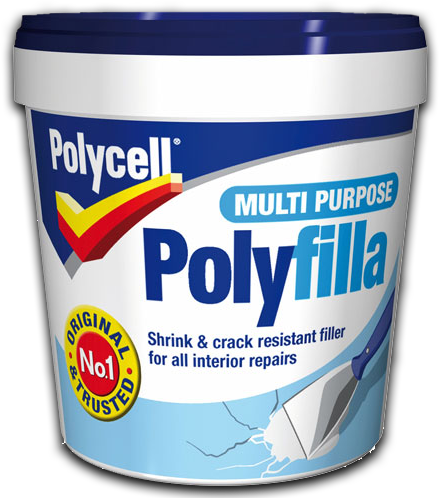

leaverou.me @leaverou me@leaverou.me
A polyfill is a piece of code (or plugin) that provides the technology that you, the developer, expect the browser to provide natively.
Remy Sharp
A shim that mimics a future API providing fallback functionality to older browsers.
Paul Irish
if (!String.prototype.trim) {
String.prototype.trim = function() {
return this.replace(/^\s+|\s+$/g,'');
};
}' JSConf EU '.trim(); // 'JSConf EU'No new API to learn
Can be removed later
var supports = {
localStorage: 'localStorage' in window,
geolocation: 'geolocation' in navigator,
querySelector: 'querySelector' in document,
HistoryAPI: 'pushState' in history,
/* etc */
}; supports.property = function(property){
var dummy = document.createElement('_');
return property in dummy.style;
};// Test it:
supports.property('textShadow');var prefixes = ['', '-moz-', '-ms-', '-o-', '-webkit-']; supports.property = function(property) {for (var i=0; i<prefixes.length; i++) { var prefixed = prefixes[i] + property;dummy.style.cssText = prefixed + ':inherit;'; if (dummy.style.getPropertyValue(prefixed)) return property;}};
supports.RGBA = (function(){var elem = document.createElement('_'), style = elem.style;try { style.color = 'rgba(0,0,0,.5)'; }catch(e) { return false; } return style.color.indexOf('rgba') > -1;})();
supports.selector = function(selector) { var style = document.createElement('style');style.innerHTML = selector + '{}'; document.body.appendChild(style);var ret = !!style.sheet.cssRules[0];document.body.removeChild(style); return ret;};
Optimistic thought:
supports.element = function(tag) {
var el = document.createElement(tag);
return el instanceof HTMLUnknownElement;
};More pragmatic:
var supports = {
canvas: 'getContext' in document.createElement('canvas'),
video: 'play' in document.createElement('video'),
progress: 'position' in document.createElement('progress')
};var input = document.createElement('input');
supports.placeholder = 'placeholder' in input;input.type = 'file';
supports.multipleUpload = 'multiple' in input;var input = document.createElement('input');
input.setAttribute('type', 'number');
supports.spinner = input.type === 'number';supports.mouseenter = (function() {
var el = document.createElement('_');
el.setAttribute('onmouseenter', 'return;');
return typeof el.onmouseenter === 'function';
})();http://perfectionkills.com/detecting-event-support-without-browser-sniffing/
Not always that simple
A polyfill for document.head:
if(!document.head) {
document.head = document.getElementsByTagName('head')[0];
}And then…
myIframe.contentDocument.head.appendChild(script);TypeError: Cannot call method 'appendChild' of undefined
Don’t:
Unless… You really have to
Code like this:
if(!('open' in document.createElement('details')) {
var details = document.getElementsByTagName('details');
for(var i=details.length; i--;) {
Details.init(details[i]);
}
}belongs to your polyfill, NOT the user’s code
In cases like that… Don't break!
Our only tools:
They bubble, so we can use event delegation!
document.addEventListener('DOMAttrModified', function(e) {
var node = e.target, attr = e.attrName;
if(/^input$/i.test(node.nodeName) &&
(attr === 'placeholder' || attr === 'value'))
Placeholder.update(node);
}, false);onpropertychange for IE < 7Object#watch() for FirefoxObject.defineProperty(obj, 'placeholder', {
get: function() { return obj.getAttribute('placeholder') },
set: function(value) { Placeholder.update(obj, value); },
enumerable: true,
configurable: true
});Support: IE8, FF4, Chrome, Safari 5, Opera 12
obj.__defineGetter__('placeholder', function() {
return obj.getAttribute('placeholder')
});
obj.__defineSetter__('placeholder', function(value) {
Placeholder.update(obj, value);
});Support: FF3.5, Chrome, Safari 4, Opera 10.10
Combine them: github.com/eligrey/Xccessors
IE < 9 thinks that attributes are properties, so:
the previous getter would result in infinite recursion
When enumerable: true IE8 throws an exception. Catch it with:
try { /* ... */ } catch(e) {
if(e.number === -0x7FF5EC54) {
/* ... */
}
}Element.prototype is not evil in this caseDOMNodeInserted to cater for new elementsMinimize dependencies
Use built-in functionality
window.matchMedia || (window.matchMedia = (function(){var div = document.createElement('div');div.id = 'mq-test-1'; div.style.cssText = 'position:absolute;top:-100em';return function(q){div.innerHTML = '<style media="'+q+'">#mq-test-1{ width:42px; }</style>'; document.body.appendChild(div);var ret = div.offsetWidth == 42;document.body.removeChild(div); return { matches: ret, media: q };}; })());
Simplified version of https://github.com/paulirish/matchMedia.js
if(!('outerHTML' in document.createElement('_')) Object.defineProperty(Element.prototype, 'outerHTML', {get: function(){if (doc.xmlVersion) { return (new XMLSerializer).serializeToString(node); }else { var x = document.createElement('_'); x.appendChild(this.cloneNode(false)); return x.innerHTML.replace('><', '>' + this.innerHTML + '<'); }}, enumerable: true});
Simplified version of https://gist.github.com/1044128 by Eli Grey
tabindex="0"CSS polyfills:
A pain in the ass
Everything is hard!
Help yourself
Help everyone
 those ____s!